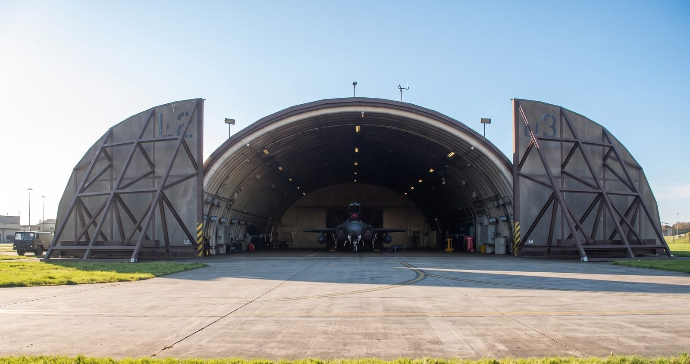

品牌主力 · 610 × 355Brand · 610 × 355주력 · 610 × 355
Wonder Arch Liner 610×355
鋼拱襯板 — UFGS 05 30 00Steel arch liner — UFGS 05 30 00강재 아치 라이너 — UFGS 05 30 00
| 適用Application적용 | 第三代機堡（單機拱形）3rd-generation HAS (single-bay arch)3세대 격납고 (단일 아치) |
|---|---|
| 工法Concept공법 | 先立鋼拱，再澆置混凝土Steel arch erected first, concrete placed over it강재 아치를 먼저 세우고 콘크리트 타설 |
| 板厚Thickness두께 | 3.2 / 4.0 / 4.5 mm |
| 準則Criteria기준 | UFC 3-340-01 · 7-Bar 爆震實測7-Bar blast tested7‑Bar 폭발 실증 |